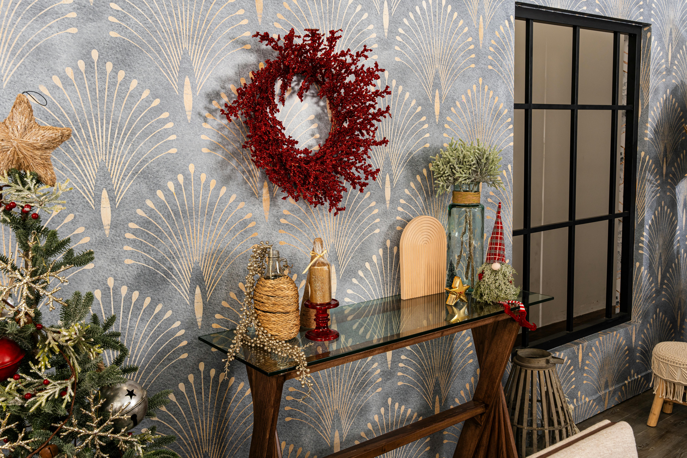

Decorating a house or room can be an enjoyable and fulfilling leisure activity. It offers a platform for creativity and self-expression while allowing individuals to create spaces that are functional, beautiful, and reflective of their personalities.

Photo by Becerra Govea
Gardening
Gardening is a fulfilling and enjoyable leisure activity that involves cultivating and caring for plants, flowers, vegetables, and herbs. It can take place in a variety of settings, including backyards, community gardens, balconies, and indoor spaces. Beyond being a hobby, gardening offers numerous benefits for mental, emotional, and physical well-being. Photo by Tima Miroshnichenko